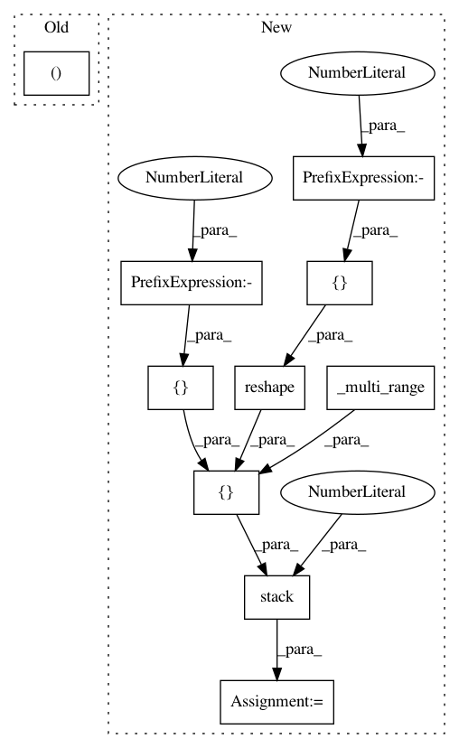

baacb20d15066935e4a23c09b1c1a6843331172f,research/object_detection/meta_architectures/center_net_meta_arch.py,,regressed_keypoints_at_object_centers,#,453
Before Change
regressed keypoints are gathered at the provided locations, and converted
to absolute coordinates in the output coordinate frame.
batch_size, _, width, _ = _get_shape(regressed_keypoint_predictions, 4)
flattened_indices = flattened_indices_from_row_col_indices(
y_indices, x_indices, width)
_, num_instances = _get_shape(flattened_indices, 2)
After Change
// TF Lite does not support tf.gather with batch_dims > 0, so we need to use
// tf_gather_nd instead and here we prepare the indices for that.
combined_indices = tf.stack([
_multi_range(batch_size, value_repetitions=num_instances),
tf.reshape(y_indices, [-1]),
tf.reshape(x_indices, [-1])
], axis=1)
relative_regressed_keypoints = tf.gather_nd(regressed_keypoint_predictions,
combined_indices)
relative_regressed_keypoints = tf.reshape(
In pattern: SUPERPATTERN
Frequency: 3
Non-data size: 10
Instances
Project Name: tensorflow/models
Commit Name: baacb20d15066935e4a23c09b1c1a6843331172f
Time: 2020-10-02
Author: gardener@tensorflow.org
File Name: research/object_detection/meta_architectures/center_net_meta_arch.py
Class Name:
Method Name: regressed_keypoints_at_object_centers
Project Name: tensorflow/models
Commit Name: baacb20d15066935e4a23c09b1c1a6843331172f
Time: 2020-10-02
Author: gardener@tensorflow.org
File Name: research/object_detection/meta_architectures/center_net_meta_arch.py
Class Name:
Method Name: prediction_tensors_to_boxes
Project Name: tensorflow/models
Commit Name: baacb20d15066935e4a23c09b1c1a6843331172f
Time: 2020-10-02
Author: gardener@tensorflow.org
File Name: research/object_detection/meta_architectures/center_net_meta_arch.py
Class Name:
Method Name: prediction_tensors_to_temporal_offsets